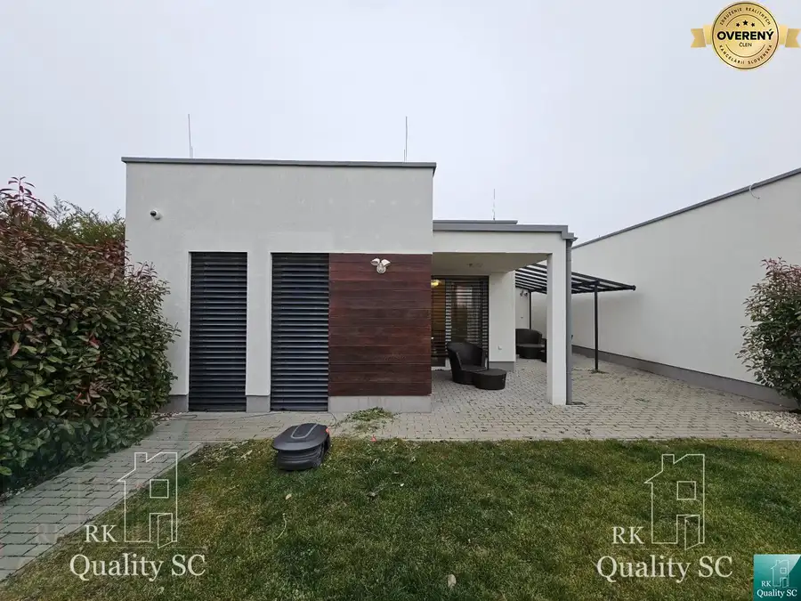
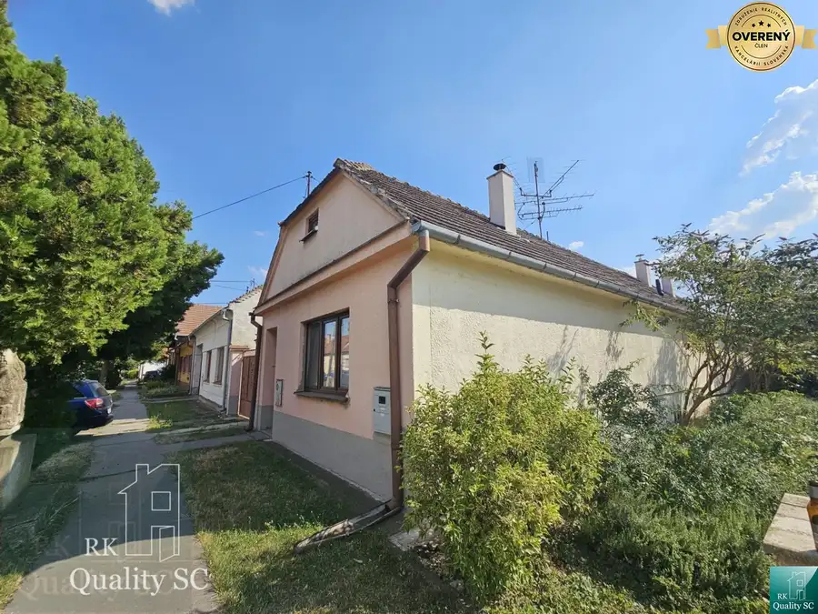
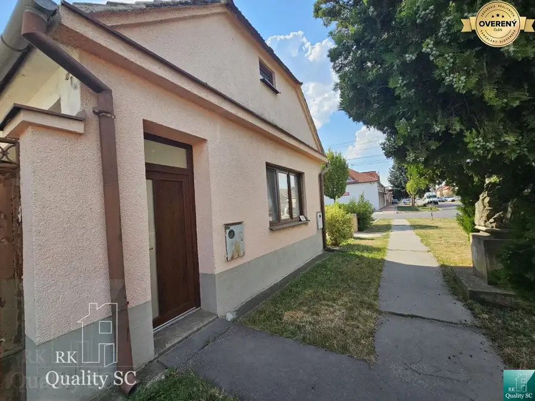

Senec - NA PREDAJ zaujímavý 3 izbový byt v zateplenej bytovke v blízko
Senec
- Dispozícia3-izbový
- Plocha65.95 m²
- Poschodie4.
- Stavpôvodný
- Vlastníctvoosobné
O nehnuteľnosti
Lokalita: Senec, ul. Zemplínska.
RK Quality SC Vám prináša ponuku na predaj dispozične zaujímavého 3. izb. bytu vo vyhľadávanej lokalite v blízkosti Strieborného jazera. Byt sa nachádza v príjemnej lokalite s dostatkom zelene a bezproblémového parkovania.
ÚP 65,95 m2 + veľký rohový balkón cca 8 m2. Poschodie 4/4 bez výťahu – schodisko je však komfortné s nízkymi pohodlnými schodmi a najvyššie poschodie vám zaručí vytúžené ticho, súkromie a pokoj bez dupotu susedov nad hlavou.
K bytu prislúcha aj vlastná praktická pivnica na prízemí.
Premyslené dispozičné riešenie :
- Priestranná vstupná chodba s veľkou vstavanou skriňou, kde má všetko svoje miesto.
- Otvorená obývacia izba prepojená s kuchyňou, ideálna na spoločné rodinné chvíle.
- Útulná detská izba so vstupom priamo z obývačky.
- Menšia prepojovacia chodba, z ktorej sa vchádza do spálne spojenej s veľkým balkónom pre Vaše ranné kávy a večerný relax.
- Z prepojovacej chodby po pravej strane je vstup do kúpeľne s vaňou a toaletou.
Byt sa nachádza v tehlovej zateplenej cca 20 ročnej bytovke s dobrými susedmi. Bezpečie celej rodiny zaručujú vstupné vchodové dvere do bytovky na čip a bezpečnostné dvere do bytu. Súčasťou sú plastové okná, sieťky proti hmyzu a plávajúce podlahy v celom byte.
Kompletné mesačné náklady na bývanie sú 175€ / 4 osoby. Samozrejmosťou je rýchla optika. Byt je krásne presvetlený vďaka skvelej orientácii na svetové strany – obývačka s kuchyňou a izba sú otočené na západ, čo prináša hrejivé poobedné slnko, a spálňa na juhovýchod Vás príjemne prebudí do nového dňa.
Skvelá občianska vybavenosť v pešej dostupnosti.
Byt leží v okrajovej časti centra mesta. Všetko pre rodinný život máte na dosah ruky – MŠ, ZŠ, potraviny BILLA a TESCO, voľnočasový X-Park či autobusovú zastávku. Bezprostredne pred bytovkou sa nachádza detské ihrisko. Obrovským benefitom a splneným letným snom je blízke Strieborné jazero, ktoré ponúka bezplatné osvieženie v kryštálovo čistej vode len kúsok od domu.
Bezproblémové parkovanie na veľkom parkovisku priamo pred bytovkou.
Tento byt je ideálny pre ľudí, ktorí majú radi pokoj a ocenia vrchné poschodie, kde im nik nad hlavami nehrkoce stoličkami či nedupoce. Budete si tu môcť naplno vychutnať nerušený výhľad a príjemné posedenie na priestrannom balkóne. Byt je kúpou ihneď voľný pre nového majiteľa.
Ak Vás táto ponuka oslovila, neváhajte ma kontaktovať a dohodnúť si obhliadku čím skôr.
Cena nehnuteľnosti: 180 000,-€
Kontakt: Lea Iveta Richesová, RK Quality SC, mobil , pevná linka , e-mail:
Zvyšujeme kvalitu služieb v našej Realitke Qualitke, bez zvýšenia našej odmeny:
• poskytujeme najvyššiu právnu ochranu pre svojich klientov formou autorizovaných Kúpnych zmlúv našou advokátkou
• podávame konania na kataster elektronicky (kratšia lehota na povolenie vkladov - namiesto do 30 kal. dní bude vklad povolený do 20 kal. dní pri štandardnom konaní a do 15 kal. dní pri zrýchlenom konaní)
• platíme všetky náklady súvisiace s autorizáciou Kúpnych zmlúv, s overením totožnosti predávajúcich (netreba chodiť k notárovi, či na matriku, pri autorizovaní KZ sa v našej kancelárii overia podpisy predávajúcich) a s povolením vkladu vlastníckeho práva na katastri (správne poplatky)
• Rezervačné zmluvy podpisujeme digitálne/online cez SIGNI (šetríme Váš čas, energiu, pohonné hmoty, parkovné…)
• „NÁŠMU KUPUJÚCEMU GARANTUJEME VRÁTENIE REZERVAČNÉHO POPLATKU V PLNEJ VÝŠKE V PRÍPADE, KEĎ MU NEZABEZPEČÍME FINANCOVANIE NEHNUTEĽNOSTI Z NAŠEJ PONUKY PROSTREDNÍCTVOM NÁŠHO HYPOPORADCU
• plus ďalšie benefity pre Vás
ZABEZPEČÍME VÁM VÝHODNÚ HYPOTÉKU A DOFINANCOVANIE TEJTO NEHNUTEĽNOSTI - ZDARMA (pretože nášho hypoporadcu platia banky) A PROMPTNE - vybavte všetko na jednom mieste, rýchlejšie a lacnejšie ako kdekoľvek inde. U NÁS NEPLATÍTE NÁKLADY ZA ZNALECKÝ POSUDOK A OSTATNÉ POPLATKY, ak využijete služby nášho hypoporadcu.
Navštíviť nás môžete osobne na adrese:
RK Quality SC, Lichnerova 25, 903 01 Senec - na pešej zóne - v obchodnom centre KOCKA (na prízemí - hneď pri ČSOB).
Parametre
| Úžitková plocha | 65.95 m² |
|---|---|
| Poschodie | 4 |
| Počet izieb | 3 |
| Vlastníctvo | osobné |
| Stav | pôvodný |
| Internet | optika |
| Balkón | áno |
| Terasa | áno |
| Pivnica | áno |
| Postavené z | tehla |
| Zariadenie | čiastočne |
| Orientácia | juhovýchodná |
| Dátum zverejnenia | 13. 9. 2026 |
Kde to je
Mohlo by Vás zaujímať

Rodinné domy10 360 000 €SENEC – NA PREDAJ - Novostavba, 4. izbový rodinný dom s parkovaním pre Senec 4-izbový101 m² Lokalita: ul. Tulipánová, Senec Gardens. RK Quality SC Vám prináša ponuku na predaj - novostavbu 4 izb. rodinného domu so záhradkou a parkovaním pre…
Rodinné domy10 177 000 €Okres Trnava- obec Pavlice – nehnuteľnosť s potenciálom - 4 izb. RD v Pavlice 4-izbový150 m² Lokalita: Pavlice, okres Trnava RK Quality SC Vám exkluzívne prináša ponuku na predaj 4-izbový tehlový rodinný dom s úžitkovou plochou cca 150 m²,…
Rodinné domy10 177 000 €Okres Trnava- obec Pavlice – nehnuteľnosť s potenciálom - 4 izb. RD v Trnava 4-izbový150 m² Lokalita: Pavlice, okres Trnava RK Quality SC Vám exkluzívne prináša ponuku na predaj 4-izbový tehlový rodinný dom s úžitkovou plochou cca 150 m²,…